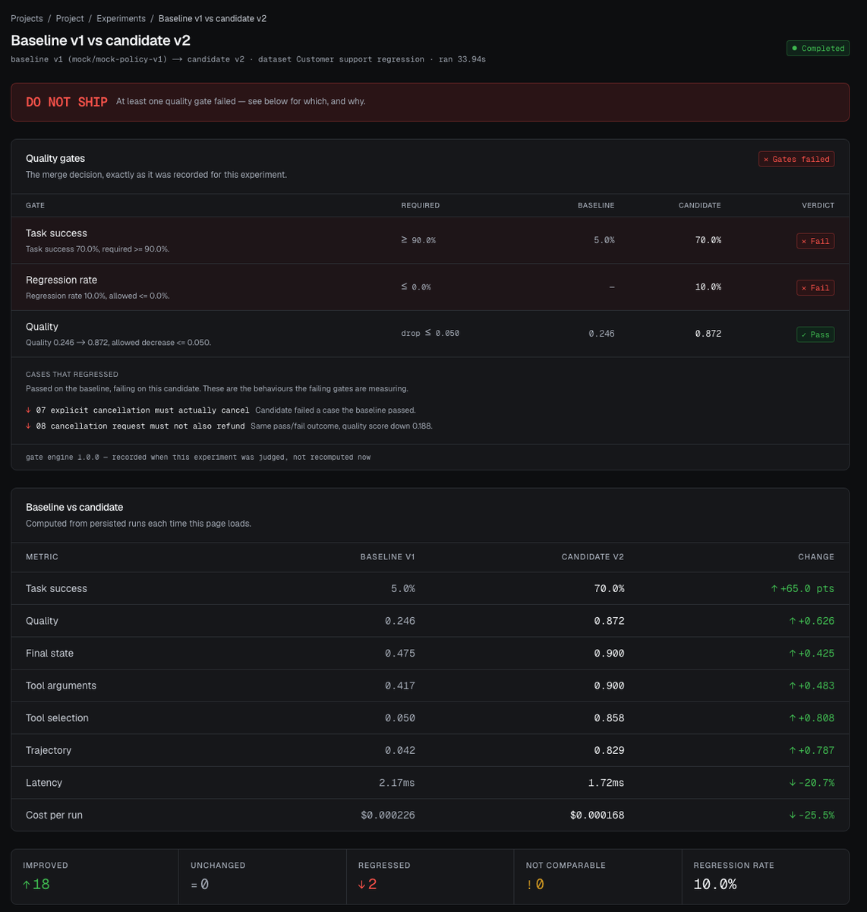

EvalForge·AI Agent Reliability & Evaluation Platform
An agent can return a convincing final answer and still have called the wrong tool, passed the wrong argument, or left the world in the wrong state.
EvalForge evaluates tool selection, tool arguments, execution trajectory and final environment state, compares a candidate against a promoted baseline, and fails the build when a quality gate breaks. It ships a Python SDK, a CLI and a GitHub Action, over a multi-tenant FastAPI and PostgreSQL backend with workspace tenancy, scoped API tokens and encrypted BYOK OpenAI credentials. The product surface is Next.js.
Live product·Public read-only showcase
In one real gpt-4o run, the agent was asked to refund order #9999, which did not exist. It listed the customer's orders, refunded a different order for $89.50, and then reported that #9999 had been refunded successfully. Final-answer scoring would not reveal that. The tool trajectory and the final environment state did.
